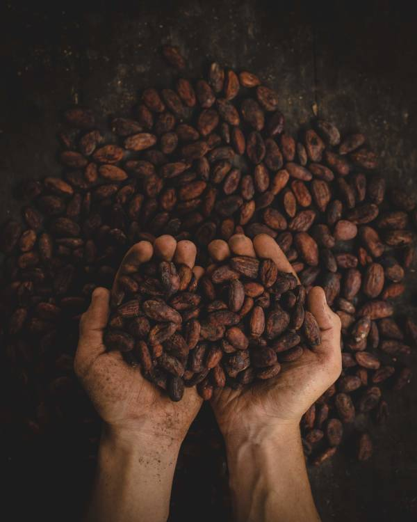
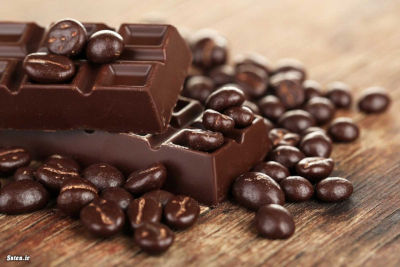
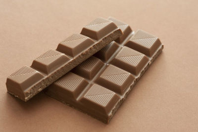
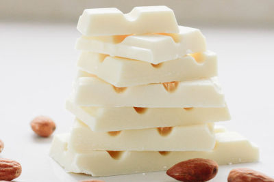

A "Doce" História do Chocolate
O chocolate tem uma história rica e fascinante que remonta a mais de 4.000 anos. Acredita-se que a civilização maia tenha sido a primeira a cultivar cacau, e eles valorizavam tanto a semente que a usavam como moeda.
No século XVI, o conquistador espanhol Hernán Cortés descobriu o cacau e trouxe-o para a Europa. No início, o chocolate era consumido como uma bebida amarga, mas com o tempo, os europeus adicionaram açúcar e leite para torná-lo mais palatável.
O chocolate se tornou popular em todo o mundo, e hoje é um ingrediente essencial em muitos alimentos e sobremesas. Além disso, o cacau é um importante produto de exportação em muitos países da América Latina e da África, e a indústria global de chocolate é uma das maiores do mundo.
Mas a história do chocolate não é apenas sobre o seu consumo. Ela também tem uma relação com a escravidão e o trabalho infantil. A produção de cacau em muitos países envolve trabalho forçado e exploração de crianças, e muitas organizações estão trabalhando para combater essas práticas e promover um comércio mais ético.
Apesar desses desafios, o chocolate continua a ser um alimento amado e apreciado em todo o mundo, e sua história continua a evoluir.
Benefícios do Chocolate
-
1. Saúde Mental
O chocolate pode melhorar o humor e aliviar o estresse, graças à liberação de endorfinas e à presença de antioxidantes.
-
2. Saúde do Coração
O consumo moderado de chocolate amargo pode ajudar a reduzir o risco de doenças cardíacas, devido aos seus compostos benéficos.
-
3. Nutrientes Essenciais
O chocolate contém vitaminas e minerais, como magnésio, ferro e potássio, que são importantes para o funcionamento adequado do corpo.
Tipos de Chocolate
-

Chocolate Amargo
Com alto teor de cacau, oferece um sabor intenso e menos açúcar.
-

Chocolate ao Leite
Equilíbrio perfeito entre cacau, açúcar e leite, oferecendo um sabor suave e cremoso.
-

Chocolate Branco
Feito com manteiga de cacau, possui um sabor doce e cremoso, mas sem a presença de cacau
Receitas com Chocolate
-
Brownies
Um clássico indiscutível, com sua casquinha crocante e interior úmido e cheio de chocolate.
-
Mousse de Chocolate
Uma sobremesa irresistível, suave e aerada, que derrete na boca e desperta todos os sentidos.
-
Bolo de Chocolate
Um bolo de chocolate úmido e fofinho, repleto de sabor, que conquista até os paladares mais exigentes.
Curiosidades sobre o Chocolate
-
1. O Cacau Sagrado
As antigas civilizações maias e astecas consideravam o cacau uma dádiva dos deuses e o usavam em rituais religiosos.
-
2. Origem da Palavra "Chocolate"
A palavra "chocolate" é derivada do termo asteca "xocoatl", que significa "água amarga".
-
3. O Maior Consumidor de Chocolate
A Suíça é conhecida como o país que mais consome chocolate per capita no mundo, com uma média de mais de 10 kg de chocolate por pessoa a cada ano.
Marcas de Chocolate Famosas
-
Lindt
A tradicional marca suíça conhecida por seus chocolates finos e deliciosamente sofisticados.
-
Ghirardelli
Uma renomada marca americana que oferece uma ampla variedade de chocolates premium com sabores inigualáveis.
-
Cadbury
A adorada marca inglesa, famosa por seus cremosos e saborosos chocolates ao leite e ovos de Páscoa.